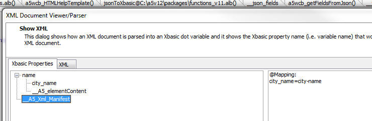
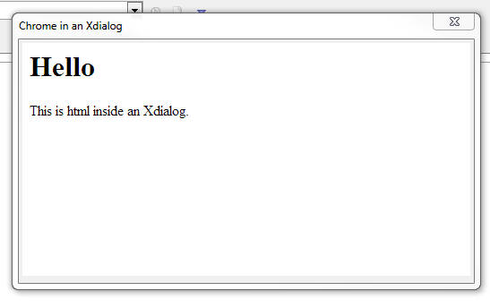
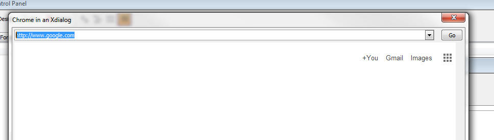
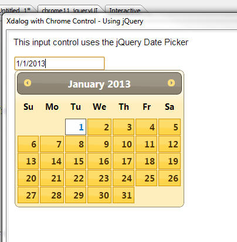

This document describes the updates and fixes made to Alpha Anywhere since its initial release.
To see the 'What's New in V12' document (which describes all of the new features in Alpha Anywhere's initial release) please click here.
Please note that Alpha Anywhere patches are only available to users with
a current subscription.
You can verify your subscription status from within Alpha Anywhere by
going to Help, About, or by clicking this link shown here (https://activation.alphasoftware.com/subscriptionStatus.aspx).
If you install an update for which your subscription is not entitled,
you will need to uninstall the update and rollback to an older version
that you are authorized to use in order to continue using Alpha
Anywhere.
In addition to the official updates that Alpha Software makes available from time to time (which are described in this document), we also make available our internal pre-release builds that allow you to see what features have been added and what bugs have been fixed since the last official update. The features and bug fixes in the pre-release build will be part of the next official update. To see the pre-release notes, please click here.
IMPORTANT: If you currently have build 1620-4172 from 21 Aug 2013 or an earlier build installed, then this is a required update.
| Xbasic - Xdialog | Using the Chrome Embeddable Browser in Xdialog |
Xdialog allows users who are building desktop
applications to create very powerful 'screens'
to prompt for and display information to users.
You can now embed Google's Chrome browser
directly into your Xdialogs. This means that you
can use the full power of HTML, CSS3 and
Javascript to create amazing looking Xdialog
screen. When you embed the Chrome control in an
Xdialog you can easily respond to events in the
HTML with either Javascript of Xbasic code. You
can also easily send events from Xbasic to the
HTML that is displayed in the embedded Chrome
control. If you have used Xdialog in your desktop applications in the past, this new feature will open up many exiting possibilities. Introduction Watch video - Part 1 Watch video - Part 2 Debugger Watch Video - Part 3 Binding events: Watch video - Part 1 Watch video - Part 2 Google Charts: Watch video Using jQuery: Watch video For extensive documentation on how to embed a Chrome control into Xdialogs see the release notes. |
UX Component - Abstract Events - Enable Expression - If the client-side enable expression was false, the click event did not fire (correct), but the down event did. This has now been changed and the down event will also not fire.
Grid Component - Image and File Upload - New Records - Form Layout - If a Grid component used a Form layout (as opposed to a Tabular layout), then image and file upload to the new record rows did not work. There was no problem when doing uploads to existing rows, or to new rows when the Grid used a Tabular layout.
UX and Tabbed UI Component - Session Timeout Warning Feature - Under certain conditions, the Session Timeout Warning for the UX and the Tabbed UI did not open at the correct time and did not show the correct time remaining. This has now been fixed and the message box will now show the actual seconds left in the session since the last request from the component.
sql_lookup() Function - As a result of a change made in build 1788 the data type returned by the sql_lookup() function was always a character value, when it should have been correctly typed (i.e. a datetime value, a numeric value, etc, depending on the data type of the column value that the function was returning).
Now, if sql_lookup() specifies a filter and returns a single field in the return expression, the return value is correctly typed. If more than one value is returned, or no filter is specified, the return value is a character string.
Grid Component - Search Part - SQL Query Using Group By - If a Grid built in V11 used a GROUP BY clause in the SQL statement, performing a search on the Grid would fail. The problem did not occur if the Grid was build in V12 and the solution was to de-select the Search Part fields and re-select them. Now, this is no longer necessary.
A5_HTML_Pretty() Function - XML - The A5_HTML_Pretty() function, which takes an HTML string and adds the correct indentation to all of the elements can now also be used to format XML. The function takes a second, optional, parameter that indicates if the input string is XML. By default, this flag is .f.
txt = http_get_page2("http://feeds.gawker.com/lifehacker/full")
txt = a5_HTML_Pretty(txt,.t.)
showvar(txt)
Xbasic - Working With XML - Working with XML in Xbasic is now even easier. The following functions have been enhanced:
In addition, the showXML() function has been enhanced.
Consider the following very simple snippet of XML.
xml = <<%txt%
Fred Smith
%txt%
If you view this XML using the XML viewer function (showXML()), you will see this:

You will notice that the XML has an attribute called 'city-name'. This is not a valid Xbasic variable name, so the attribute has to be renamed (to 'city_name'). In order that the *property_to_xml() function can get back to the same XML that was originally parsed, a list of all of the attribute names that were changed is kept in the special __A5_Xml_Manifest property.
Also, you will notice that in the XML snippet, the 'name' element has a value and also it has attributes. The attribute values are shown as properties and the element value is shown using the special property name '__A5_elementContent'.
Here is how you can parse the above XML into an Xbasic dot variable:
delete p
dim p as p
'set the optional 3rd flag to .t. to use the special
properties
*property_from_xml(xml,p,.t.)
'convert the dot variable into a script so we can 'see' what's in the variable
?*variable_to_script(p)
= DIM name as P
DIM name.city_name as C = "boston"
DIM name.__A5_elementContent as C = <<%str%
Fred Smith
%str%
DIM __A5_Xml_Manifest as C = <<%str%
@Mapping:
city_name=city-name%str%
'now, go back to XML
?*property_to_xml(p,"")
=
Fred Smith
Notice how this is a perfect 'round-trip'! The generated XML is the same as the initial XML that was parsed.
Now, try the above exercise without using the new optional flag on the *property_to_xml() function
delete p
dim p as p
*property_from_xml(xml,p,.f.)
'convert the dot variable into a script so we can 'see' what's in the variable
?*variable_to_script(p)
= DIM name as P
DIM name.city_name as C = "boston"
Notice how the Xbasic dot variable only has the value of the attribute. It does NOT have the value of the element!
*HTML_GET_ATTRIBUTE() Function - Quick way to extract an attribute value from some HTML markup.
The syntax is:
C result = *HTML_GET_ATTRIBUTE( markup as c, attributePattern as c)
Consider the following HTML markup:
dim html as c
html = <<%html%
id="GRID1.V.R2.PICTURE1"
onmouseover="$('bp').src=img;"
style="height: 1in; cursor: pointer;"
src="pictures/5.jpg"
title="pictures/5.jpg"
onerror="{grid.object}._executeEvent('onImageError',{element:
this});" />
%html%
Say you wanted to extract the 'src' attribute from this HTML. A simple string search for the text 'src=' would be wrong because it would get confused by the code for the onmouseover event handler.
dim attr as c
attr = *HTML_GET_ATTRIBUTE(html,"src")
? = src="pictures/5.jpg"
AlphaDAO - ResultSet - Generating JSON Data - .ToJSONObjectSyntax() Method - When you use the .ToJSONObjectSyntax() method to generate JSON data from a resultset, and you set the optional ConvertToText flag to .f. (it defaults to .t.), then date and date time values in the resultset now create Javascript date objects. For example:
dim cn as sql::Connection
cn.open("::Name::_northwind")
cn.PortableSQLEnabled = .t.
cn.Execute("select first 5 orderid, orderdate from
orders")
rs = cn.ResultSet
?rs.ToJSONObjectSyntax(-1,-1,.f.,.f.)
= {"orderid" : 10255, "orderdate" : new Date(1952, 11,
18, 0, 0, 0, 0)}
{"orderid" : 10249, "orderdate" : new Date(1996, 6, 5,
0, 0, 0, 0)}
{"orderid" : 10250, "orderdate" : new Date(1996, 6, 8,
0, 0, 0, 0)}
{"orderid" : 10251, "orderdate" : new Date(1996, 6, 8,
0, 0, 0, 0)}
{"orderid" : 10252, "orderdate" : new Date(1996, 6, 9,
0, 0, 0, 0)}
Xdialog - Chrome Browser Control - Xdialog now allows you to embed the Chrome browser control. This allows you to build some amazing desktop applications using the full power of HTML, CSS3 and Javascript. This is a really fantastic new feature and all developers of desktop applications are strongly encouraged to check it out!
Previously, Alpha Anywhere allowed you to use the Internet Explorer ActiveX control in an Xdialog. While this is still possible, using the Chrome control is now so much easier and more powerful, that it is hard to imagine a scenario under which using the Internet Explorer ActiveX control would be preferable to using the Chrome control.
NOTE: With Internet Explore, some of Xdialogs that used the Internet Explorer ActiveX control have stopped working because of changes Microsoft has made to IE in IE Version 11. Using the Chrome control instead of the IE ActiveX control circumvents this issue.
With the Chrome control hosted in an Xdialog you can:
Since the HTML loaded in the Chrome control can use open source Javascript libraries, such as jQuery, you can build really powerful Xdialogs for your desktop applications using a myriad of techniques made possible by third party libraries. (See below for information on the a5_html_page_prepare() function.)
NOTE The code for all of the examples used here is available in the sample Learning Xdialog workspace that ships with Alpha Anywhere. To get an updated version of 'Learning Xdialog' you must do a full install, not a patch install.
A simple Xdialog that uses the Chrome Control
Create a new script with this code:
dim cp as helper::Chrome
cp.html = <<%html%
This is html inside an Xdialog.
And here is the resulting Xdialog when you run the code.

In the above code, notice that a new object is declared with the
dim cp as helper::Chrome
command.
Also notice that the HTML to display in the Chrome control was set by setting the .html property.
You can either set the object's .html property if you want to specify explicit HTML to display, or you can set the .url property (if you want to show a URL - see next example).
Once the Chrome object has been declared, it can be placed in the Xdialog using this Xdialog command:
{chrome=100,20cp};
In this above example, the width of the Chrome control is set to 100 'characters' and the height to 20 'lines'.
Notice that the 'cp' in the above command is the name of the helper::Chrome object that was defined.
You can put as many Chrome objects on an Xdialog as you want. For exmaple:
dim cp1 as helper::chrome
dim cp2 as helper::chrome
....
dim cpn as helper::chrome
And then in your Xdialog body:
{chrome=100,20cp1};
{chrome=100,20cp2};
{chrome=100,20cpn};
Specifying a URL to load
dim cp as helper::Chrome
cp.url = "http://www.google.com"
dim dlg_title as c
dim dlg_body as c
dlg_body = <<%dlg%
{stretch=height,width}
{chrome=100,30cp};
%dlg%
dim dlg_event as c
dlg_title = "Chrome in an Xdialog"
ui_dlg_box(dlg_title,dlg_body,dlg_event)

Specifying a Dynamic URL
In this next example we show how the URL property can be dynamically changed after the Xdialog has been rendered.
dim cp as helper::Chrome
cp.url = "http://www.google.com"
dim urls as c
urls = <<%txt%
http://www.google.com
http://www.bing.com
http://www.yahoo.com
%txt%
dim url as c
url = word(urls,1,crlf())
dim dlg_title as c
dim dlg_body as c
dlg_body = <<%dlg%
{startup=urlchanged}
{stretch=width}
[.160url^+urls]
{stretch=height,width}
{chrome=173,60cp};
%dlg%
dim dlg_event as c
dlg_event = <<%code%
if a_dlg_button = "urlchanged" then
a_dlg_button = ""
cp.url = url
end if
%code%
dlg_title = "Chrome in an Xdialog"
ui_dlg_box(dlg_title,dlg_body,dlg_event)
The resulting Xdialog looks like this:
You can type any address into the address bar and then hit the Go button to go to the page.

Notice that in the above code, when the user clicks on the Go button the Xbasic that gets executed is:
cp.url = url
We simply set the URL of the Chrome object to the new URL and Chrome automatically navigates to the target URL.
Using Xbasic to Execute Javascript in the Chrome Control
The Chrome object exposes two methods that allows you to execute Javascript from Xbasic. These are:
Consider the following example of an Xdialog that is hosting the Chrome control, showing some HTML with an input control. We have to Xdialog buttons, one to set the value in the HTML input, and the other to read the value from the HTML input.
dim cp as helper::Chrome
cp.html = <<%html%
Name:
%html%
dim dlg_title as c
dim dlg_body as c
dlg_body = <<%dlg%
{chrome=40,10cp};
%dlg%
dim dlg_event as c
dlg_event = <<%code%
if a_dlg_button = "setName" then
a_dlg_button = ""
dim jstorun as c
dim name as c
name = ui_get_text("Name","Enter name")
jstorun = "document.getElementById('name').value = '" +
js_escape(name) + "';"
cp.ExecuteJavascript(jstorun)
else if a_dlg_button = "readName" then
a_dlg_button = ""
dim jstorun as c = "document.getElementById('name').value"
dim result as c
result = cp.ExecuteJavascriptResult(jstorun)
ui_msg_box("Notice:","Value read from the HTML is: " +
result)
end if
%code%
dlg_title = "Chrome in an Xdialog"
ui_dlg_box(dlg_title,dlg_body,dlg_event)
The important thing to notice in this example is that the Javascript that gets executed here is computed by Xbasic and Xbasic is invoking the Javascript.
Using Javascript to Invoke Xbasic
In the previous example, we used Xbasic to invoke Javascript on the Chrome control. In this example, we turn it around and invoke Xbasic from Javascript.
This Xdialog has an event called 'event1' (see code in red below) and the HTML has a button. When the user clicks on the HTML button, the Xdialog event ('event1') is fired.
In order to make this work, a special Javascript function (called xDialogEvent) must be added to the HTML page. The onclick event for the button is then set to:
xDialogEvent('event1')
TIP: Because it is cumbersome to have to have to
add the xDialogEvent() helper function to the HTML yourself, a special
helper function can be called to 'prepare' the HTML you pass into the
chrome object. For example:
dim cp as helper::Chrome
cp.html = a5_html_page_prepare(<<%html%
%html%)
dim cp as helper::Chrome
cp.html = <<%html%
Using Built In Images
Alpha Anywhere comes with a large library of built in images and icons that you might want to use in the HTML that is shown in the Chrome control.
You can easily use built in images using this syntax:
$$application.chrome.png"
/>
The portion shown in red is the built in image name.
For example
dim cp as helper::Chrome
cp.html = <<%html%


%html%
dim dlg_title as c
dim dlg_body as c
dlg_body = <<%dlg%
{chrome=100,20cp};
%dlg%
dim dlg_event as c
dlg_title = "Chrome in an Xdialog"
ui_dlg_box(dlg_title,dlg_body,dlg_event)
And the resulting Xdialog:

Referencing Static Resources
To display image files you can either use the special a5file prefix on the filename, or you can use the standard file:// protocol. However, in order to the use file:// protocol, you have to turn Chrome security off using the command shown in red.
dim cp as helper::Chrome
'in order to use the standard file:// protocol you have to turn
'Chrome's web security off.
'otherwise you can use use the special a5file: command.
cp.flag_web_security_disabled = .t.
cp.html = <<%html%
%html%
dim dlg_title as c
dim dlg_body as c
dlg_body = <<%dlg%
{chrome=100,20cp};
%dlg%
dim dlg_event as c
dlg_title = "Chrome in an Xdialog"
ui_dlg_box(dlg_title,dlg_body,dlg_event)
And the resulting Xdialog:

Using the Chrome Debugger
You can use the Chrome debugger to debug Javascript that is running inside the Chrome control. For example, consider the following Xdialog.
The HTML has a Javascript function that executes a loop. The function uses the 'debugger;' Javascript command to turn on the debugger.
The Xdialog has a button that executes this code:
cp.OpenDevtools()
'cp' is the Chrome object (created by the dim cp as helper::Chrome command), and we are calling the object's .OpenDevTools() method to enable the Chrome Developer tools.
Once the Developer Tools have been opened, we can click the button on the HTML page to run the Javascript and debug into the code.
dim cp as helper::Chrome
cp.html = <<%html%
dim dlg_title as c
dim dlg_body as c
dlg_body = <<%dlg%
{chrome=100,20cp};
%dlg%
dim dlg_event as c
dlg_event = <<%code%
if a_dlg_button = "openDebugger" then
'open the Chrome debugger
a_dlg_button = ""
cp.OpenDevtools()
end if
%code%
dlg_title = "Chrome in an Xdialog"
ui_dlg_box(dlg_title,dlg_body,dlg_event)
Setting the Zoom Level of the HTML Document
You can set/get the zoom level of the HTML shown in the Chrome control by using these methods:
The level is a numeric value
Binding Events Programmatically
When you write the HTML that is displayed in the Chrome control you can either add events directly into the HTML markup, or you can bind the events programmatically using Xbasic.
For example, if your HTML included this markup:
then, when you ran the Xdialog and clicked on the button, the Javascript function myclickevent() would be invoked.
However if your HTML included this markup:
then, clicking on the button would do nothing because no event had been bound to the button.
Using methods of the Chrome control, you can bind event handlers to any element.
The syntax is:
Where definition is a string in this format:
elementId|eventName|xdialogEventToFire
For example:
dim definition as c
definition = "btn1|click|xbasicEvent1"
cp.AddEventListeners(definition)
The definition string that you pass into the .AddEventListners() function can be a cr-lf delimited string. This allows you to bind events to multiple elements with a single call to the .AddEventListners() function.
The above code will bind an onClick event to an element with an id of 'btn1'. When the user clicks the button, the Xdialog event called 'xbasicEvent1' will be fired.
Note: We are using the .AddEventListeners() to invoke Xbasic (by calling an event in the parent Xdialog). We are NOT using the method to bind a Javascript event handler, since there are existing Javascript methods to bind Javascript events to elements.
Watch video to see an example of using the .AddEventListners() method.
Download sample code used in video
The .AddEventListners() function can be called before the Xdialog is even instantiated. There is no need to wait for Xdialog and the Chrome control inside the Xdialog to be ready. For example, consider the following script:
dim cp as helper::Chrome
html = <<%html%
%html%
cp.html = html
'notice that the event binding is defined before the xdialog has
even been rendered!
dim mapping as c
mapping = <<%txt%
b1|click|event1
b2|click|event2
%txt%
cp.AddEventListeners(mapping)
dim dlg_title as c = "Binding Multiple Events Handlers at Once"
dim dlg_body as c
dlg_body = <<%dlg%
{chrome=80,10cp};
%dlg%
dim dlg_event as c
dlg_event = <<%code%
if a_dlg_button = "event1" then
a_dlg_button = ""
ui_msg_box("Notice","Event 1 has fired")
else if a_dlg_button = "event2" then
a_dlg_button = ""
ui_msg_box("Notice","Event 2 has fired")
end if
%code%
ui_dlg_box(dlg_title,dlg_body,
Setting/Getting Attributes and Values Programmatically
When you host a Chrome control in an Xdialog you will often want to manipulate attributes of the HTML that is displayed using Xbasic.
You can obviously do this by using Xbasic to send Javascript to the
Chrome control (using the
For example, say you want to set the Inner HTML of a div with the id of 'div1'.
You Xdalog could execute this code
dim js as c
js = "document.getElementById('div1').innerHTML = '" + js_escape("some text") + "'; "
cp.ExecuteJavascript(js)
However, the .SetInnerHTML() method provides a more direct way of accomplishing this. For example
cp.SetInnerHTML("div1","some text");
NOTE: The js_escape() function is a helper function that ensures that all text in the string is properly escaped so as not to cause Javascript errors.
Similarly you can use the following methods:
HasElement(elementId) - indicates whether the specified
elementId is present
HasAttribute(elementId,attributeName) - indicates if the
specified element has the specified attribute
GetAttribute(elementId,attributeName) - gets the
value of the specified attribute from the specified element
SetAttribute(elementId,attributeName,attributeValue) -
sets the value of an attribute
GetInnerText(elementId) - gets the inner text property of
an element
GetValue(elementId) - gets the value of element (for
example, an INPUT control)
SetValue(elementId,value) - sets the value of an
element
GetOuterHtml(elementId) - gets the outer html for an
element
GetInnerHtml(elementId) - gets the inner html for an
element
SetInnerHtml(elementId,value) - sets the inner html
of an element
Example code
dim cp as helper::Chrome
html = "
dlg_title = "Using Google Charts in a Chrome Control
in an Xdialog"
ui_dlg_box(dlg_title,dlg_body,dlg_event)
Using Google Charts in an Xdialog
You can use the Google Charts API to add charting to your Xdialogs. For example, the image below shows an Xdialog with a Google chart.
For example, the image below shows an Xdialog with a Google chart.
TIP: In addition to watching the above videos,
you might also find these videos helpful. They show how Googl Charts can
be used in a UX Web component and they give more background information
on using the Google API documentation to get working code samples:
Watch Video - Part 1
Watch Video - Part 2

Using the Alpha Anywhere Javascript Library, Styles and 3rd Party Javascript Libraries
A huge advantage of being able to use the Chrome control in your Xdialogs is the ability to use Alpha Anywhere Javascript libraries and styles and 3rd party libraries and styles in your Xdialog.
A special helper function called a5_html_page_prepare() makes it very easy to create the HTML page that you will load into the Chrome control with all of the libraries and styles that you want.
The function takes some input HTML and then adds the necessary code to your input HTML to load the Javascript and styles that you specify.
The function syntax is:
c html = a5_html_page_prepare(C html [,C javascriptLibrariesPublic [,L flagIncludeA5JSlibraries [,C A5StyleName [,C jQueryTheme [,L flagIncludeGoogleJSAPI ]]]]])
where:
The javascriptLibrariesPublic Parameter
The following libraries can be loaded.
For each library that you load, you can specify an optional build number. The syntax is:
libraryName|buildNumber
If you leave out the buildNumber then the most recent build on the Google CDN as of December 1, 2013 is loaded.
If you set the buildNumber to 'internal' then the code is loaded from the Google CDN and then cached locally so that future loads are faster.
Example
dim html as c
html = ""
html = a5_html_page_prepare(html,"jquery|internal,jquery ui|internal,angularjs|internal",.t., "iOS","Sunny")
In the above example:
IMPORTANT: When you specify that Alpha Anywhere Javascript library and jQuery should be loaded the jQuery object is automatically changed from its default '$' to 'jQuery'.
For example, in the code below, the jQuery date picker is used for the input control.
dim html as c
html = <<%html%
This input control uses the jQuery Date Picker
html = a5_html_page_prepare(html,"jquery|internal,jquery
ui|internal",.t., "MobBlue","Sunny")
dim cp as helper::Chrome
cp.html = html
ui_dlg_box("Xdalog with Chrome Control - Using jQuery",<<%dlg%
{stretch=width,height}
{chrome=150,50cp};
%dlg%,<<%code%
%code%)
And the resulting Xdialog

Using the .OnReady() Event
The Chrome control has an .OnReady() event that fires, and executes Xbasic, once the control has been initialized.
For example:
dim cp as helper::Chrome
html = <<%html%
%html%
cp.html = html
'the onReady event fires when the chrome control has been
initialized
cp.OnReady = "ui_msg_box(\"Notice\",\"The Chrome control has been initialized.\")"
dim dlg_title as c
dim dlg_body as c
dlg_body = <<%dlg%
{chrome=80,10cp};
%dlg%
dim dlg_event as c
%code%
dlg_title = "Xdialog"
ui_dlg_box(dlg_title,dlg_body,
Notice: The .onReady() event executes Xbasic code, not Javascript. If you want to fire Javascript when the Chrome control is ready, simply put an onload event in the
tag of the HTML you display in the control. For example:
Summary of Properties and Methods of the Chrome Object
When you dim a Chrome object, the resulting object instance has many properties and methods that are exposed to Xbasic.
For example
dim cp as helper::chrome
When the above Xbasic is executed, the resulting Xbasic variable 'cp' has various method and properties, which are summaries here:
Properties
url - allows you to set the URL for the page to
be shown in the Chrome control
html - allows you to set the HTML to be shown in
the Chrome control
error gets set if you call Javascript
and there is an error, or if there is an error loading
the page
flag_web_security_disabled
flag_allow_file_access_from_url
flag_allow_universal_file_access_from_url
flag_page_cache_disabled
flag_caret_browsing_enabled
flag_databases_disabled
flag_plugins_disabled
flag_java_disabled
flag_javascript_disabled
flag_dom_paste_disabled
flag_encoding_detector_enabled
flag_drag_drop_disabled
flag_load_drops_disabled
flag_history_disabled
flag_remote_fonts_disabled
flag_image_load_disabled
Methods
ExecuteJavascript(code) - executes some
Javascript
ExecuteJavascriptResult(code) - executes
some Javascript and returns a result to Xbasic
Print() - invokes the Chrome control's print
dialog
GoBack()
GoForward()
Reload() - reload the current page
Stop() - stops the page loading
GetZoomLevel() - gets the numeric zoom level
SetZoomLevel(level) - sets the zoom level
OpenDevtools() - opens the Chrome developer tools
CloseDevtools() - closes the Chrome developer
tools
OnReady(xBasicCode) - executes Xbasic code
when the Chrome control has been initialized.
NOTE: The tasks performed by the following method could just as well be done by using the .ExecuteJavascript() or .ExecuteJavascriptResult() methods. However, since these methods that go directly against the DOM without having to execute Javascript, they are more convenient to use.
HasElement(elementId) - indicates whether
the specified elementId is present
HasAttribute(elementId,attributeName) -
indicates if the specified element has the specified
attribute
GetAttribute(elementId,attributeName)
- gets the value of the specified attribute from the
specified element
SetAttribute(elementId,attributeName,attributeValue)
- sets the value of an attribute
GetInnerText(elementId) - gets the inner
text property of an element
GetValue(elementId) - gets the value of
element (for example, an INPUT control)
SetValue(elementId,value) - sets
the value of an element
GetOuterHtml(elementId) - gets the outer
html for an element
GetInnerHtml(elementId) - gets the inner
html for an element
SetInnerHtml(elementId,value) -
sets the inner html of an element
AddEventListeners(definition) - binds an
event handler to an element. See section above 'Binding
events programmatically'
DropEventListeners(elementId) - drops an
event listener.
AlphaDAO - SQL Server - Stored Procedures - Output Arguments - If you have a SQL server stored procedure that sets the value of an output argument, reading the value in the output argument, after the stored procedure has executed can be tricky. That's because you have to ensure that you first loop through all of the result sets that are returned by the stored procedure before reading the output arguments.
Consider the following trivial stored procedure:
SET ANSI_NULLS ON
GO
SET QUOTED_IDENTIFIER ON
GO
CREATE PROCEDURE TestSP
-- Add the parameters for the stored procedure here
@InParam CHAR(10),
@OutMessage CHAR(50) OUTPUT
AS
BEGIN
-- SET NOCOUNT ON added to prevent extra result sets
from
-- interfering with SELECT statements.
SET NOCOUNT ON;
SET @OutMessage = 'initialized'
END
GO
From the interactive window:
dim cn as sql::Connection
cn.open("::Name::sqlserver")
delete args
dim args as sql::Arguments
dim Message as c = "test message"
'need to pad out the argument so it matches the
definition in the stored procedure
message = padr(Message,50," ")
args.set("InParam" , "1234567890")
args.set("OutMessage",Message,sql::ArgumentUsage::InputOutputArgument)
?cn.Execute("{CALL TestSP(:InParam, :OutMessage)}",args)
= .T.
Now try to read the output parameter value
?args[2].data
= "Initialized"
Notice that this worked as expected. But it only worked because the stored procedure did not return any resultsets.
Now let's modify the stored procedure so that it returns two resultsets:
USE [Northwind]
GO
/****** Object: StoredProcedure [dbo].[TestSP] Script
Date: 12/6/2013 1:25:13 PM ******/
SET ANSI_NULLS ON
GO
SET QUOTED_IDENTIFIER ON
GO
ALTER PROCEDURE [dbo].[TestSP]
-- Add the parameters for the stored procedure here
@InParam CHAR(10),
@OutMessage CHAR(50) OUTPUT
AS
BEGIN
select * from customers
select * from employees
-- SET NOCOUNT ON added to prevent extra result sets
from
-- interfering with SELECT statements.
select * from customers
SET @OutMessage = 'initialized'
END
Now, From the interactive window:
dim cn as sql::Connection
cn.open("::Name::sqlserver")
delete args
dim args as sql::Arguments
dim Message as c = "test message"
'need to pad out the argument so it matches the
definition in the stored procedure
message = padr(Message,50," ")
args.set("InParam" , "1234567890")
args.set("OutMessage",Message,sql::ArgumentUsage::InputOutputArgument)
?cn.Execute("{CALL TestSP(:InParam, :OutMessage)}",args)
= .T.
Now try to read the output parameter value
?args[2].data
= "test message"
This is not what we expect!. The output parameter cannot yet be read because we have not yet looped through all of the result sets returned by the stored procedure.
So, execute:
?cn.ResultSet.NextResult()
= .t.
and again:
?cn.ResultSet.NextResult()
= .t.
and again (the .f. return value tells you that there are no more resultsets):
?cn.ResultSet.NextResult()
= .f.
Now, that there are no more resultsets, you can read the output arguments:
?args[2].data
= "initialized"